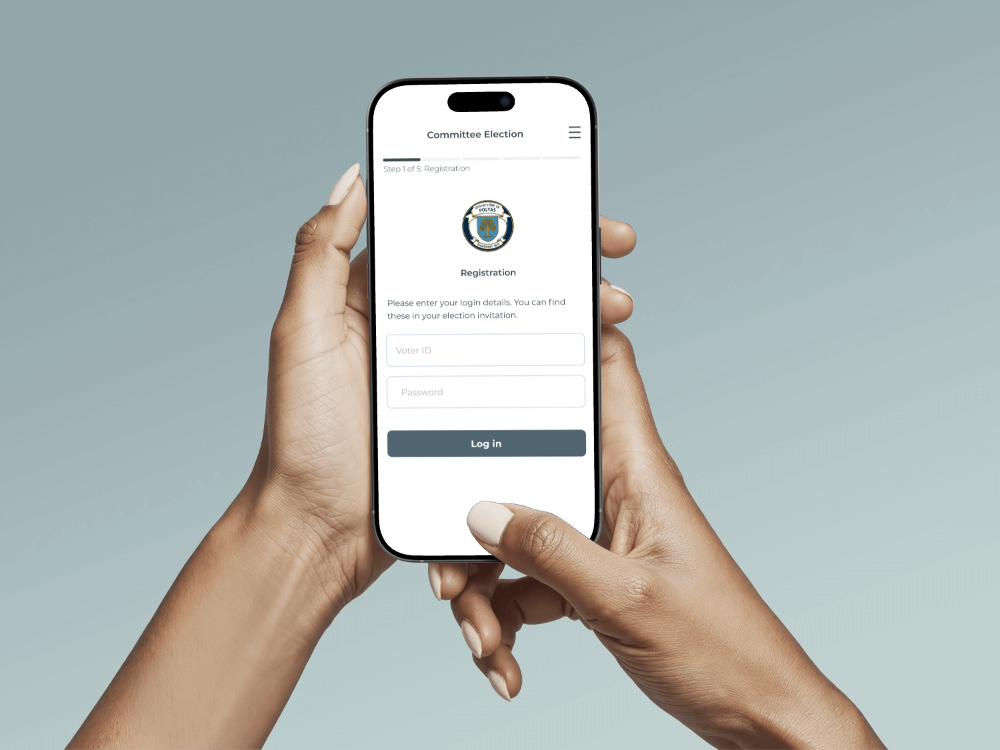

Ausgewählte Projekte Selected Projects
Case Studies. Case Studies.
Meine Arbeit mit messbarem Impact. Auf Wunsch stelle ich gerne weitere Projekte im Detail vor. My work with measurable impact. Happy to present additional projects in detail upon request.

01 / 03
POLYAS
New Voting Client
Mobile-First Voting Interface mit WCAG 2.0 Barrierefreiheit. Komplette Neugestaltung für optimale Usability auf allen Geräten. Mobile-first voting interface with WCAG 2.0 accessibility. Complete redesign for optimal usability across all devices.
Projektergebnisse Project Results

02 / 03
Neue Einstiegsexperience
POLYAS Configurator
New Entry Experience
POLYAS Configurator
Optimierte Einstiegserfahrung für den POLYAS Configurator. Intuitive Nutzerführung durch responsives Design und klare User-Flows für bessere Orientierung. Optimized onboarding experience for the POLYAS Configurator. Intuitive user guidance through responsive design and clear user flows for better orientation.
Projektergebnisse Project Results


03 / 03
Etablierung eines neuen
Feedback-Prozesses
Establishing a New
Feedback Process
Ja, es könnte ein weiteres schönes UI-Projekt sein – aber ich bin stolz darauf, dass ich bei POLYAS nicht nur Design geliefert habe, sondern auch organisatorische Veränderungen anstoßen und Prozesse nachhaltig verbessern konnte. Yes, this could have been another nice UI project – but I'm proud that at POLYAS I didn't just deliver design, but was also able to drive organizational change and improve processes in a lasting way.
Projektergebnisse Project Results